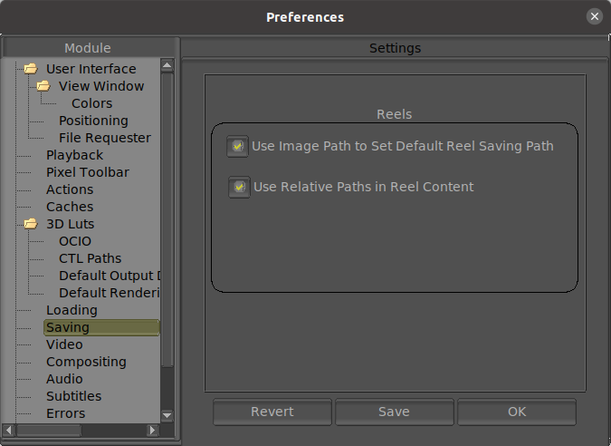

|  |
When this option is on, the file requester to save the reel will default to the path of the first image loaded in the current reel. When this option is on, the images saved in a reel will try to keep relative paths whenever possible. This is useful when changing platforms or OSes. |